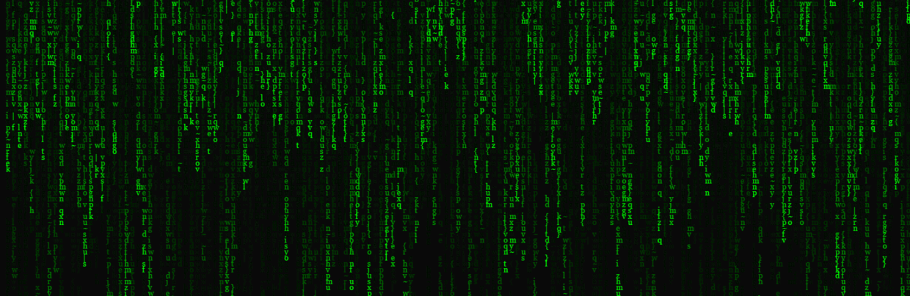

LINUX基础
Linux与Ubuntu
还记得黑客们没有图标的屏幕上跳动的绿色字符么，而且他们似乎完全不需要鼠标。

其实在出现可视化界面之前，搞计算机的都在终端里面敲命令行。对于生物信息学相关的软件来说，基本上只有在线服务器和一些昂贵的收费软件是通过点击鼠标完成的，大部分的软件还是需要在终端里通过命令行运行的，平时的文件格式的处理什么的工作也会在命令行里得到快速的完成。
Windows有CMD，Mac有自己的Treminal，但是我们要向大家介绍一个新的系统：Linux。
Linux是一类开源的操作系统，在服务器上基本上都运行着Linux，Ubuntu属于其中的一个发行版，也是整个教程依赖的操作系统。
伴随着云端技术的发展，我们每个人都可以拥有一台自己的云服务器。建议读者注册一个阿里云或者腾讯云，学生套餐一年也就一百多，具体怎么注册我就不赘述了，选择系统镜像时选择Ubuntu。
重要的事情说三遍：Linux，Linux，Linux！
使用终端连接服务器
对于MAC，打开终端，对于Windows，打开cmd，输入：
ssh <username>@ip
按下回车键后输入密码（这里的密码不会显示出来）
ssh test@49.234.109.154
还没有自己的ubuntu可以先用我的，这个是我的腾讯云的地址，密码是testabc。上面部署了这个教程所需的大部分软件。
建议你使用自己的云服务器，或者直接在电脑上安装双系统，或者直接在实验室找一台旧电脑安装Ubuntu，你会发现Ubuntu能让你的旧电脑变快。
Linux常用命令
下面介绍一些Linux的常用命令（command）：
| Command | 含义 |
|---|---|
| ls | list, 列出当前目录下所有文件和子目录 |
| cd | Change directory, 进入某一目录 |
| pwd | print working directory, 显示当前路径 |
| vi | View, 查看某一文件，可以编辑 |
| less | 查看某一文件，但是不会把文件全部读入内存 |
| head | 查看前十行 |
| tail | 查看文件最后十行 |
| grep | 抓取文件中含有某字符串的所有行 |
| cp | Copy, 拷贝文件 |
| mv | Move, 移动文件 |
| wc | Word count, 查看文件总行数，词数，字符数 |
| rm | Remove, 删除文件 |
| mkdir | Make directory, 创建新的目录 |
| cat | 打印文件到屏幕 |
| sort | 排序 |
| top | 显示运行状况 |
| chmod | Change mode, 修改文件权限 |
常用的还有tar、awk、sed等，具体的使用方法会在后续的教程里一一体现。大家不要对命令行界面存在畏难情绪，其实我一开使用也很不习惯，但是多用用就会发现其中的快捷方便之处了。如果能初步掌握awk和sed你会发现打开了新世界的大门，文件格式的处理是相当的方便。